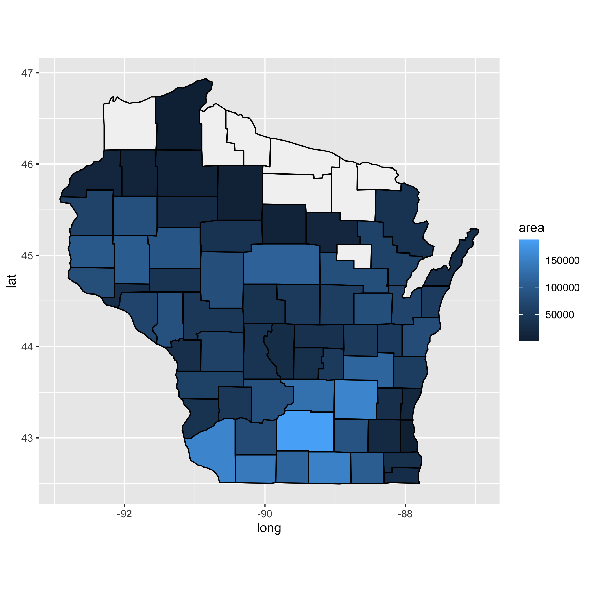

Data visualization is just awesome! And it’s incredible how versatile the package ggplot2 is. To show you that, we’re going to build a map of Wisconsin containing a gradient of colors indicating the area planted with corn in the state at a county level. To do so, we’ll be using the package ‘tidyverse’ for plotting and data manipulation. And the packages ggspatial, ggthemes, and ggtext for customizing our map.
library(tidyverse) #ggplot2 for plotting and dplyr for data manipulation
library(ggspatial) #map features
library(ggthemes) #map features
library(ggtext) #map featuresAs our first step, we need Wisconsin geographic coordinates (latitude and longitude) that will work as our base map. One easy way to get this information is using the ggplot2 package. That’s right. You heard me ggplot2! ggplot2 is not only for plotting graphics but also maps and other cool stuff. In this case, ggplot2 carries the ‘map_data’ function, which loads geographical data from the maps package.
To get the state of Wisconsin data, we just need two lines of code. On the first line, we specify the division of our data in the ‘map_data’ function. When we use ‘county’, the output will be Wisconsin with all its counties coordinates. And if we use ‘state’, it will be only the state geographical data, which would result in a blank map. On the second line, we filter the state we’d like to work with, in this case, Wisconsin. But, you can choose your own state. If we don’t filter by state, the output will be the United States data.
wisconsin <- map_data("county") %>% #to specify the division of the data
filter(region == "wisconsin") #to filter by stateLet’s take a look at what kind of data we got. As you can see, we have everything we need for our map. We have longitude (long) and latitude (lat) for all Wisconsin counties (subregion) and also each county group.
library(DT)
wisconsin %>%
datatable()The data are looking good, but the subregion column is not intuitive. So, let’s change its name to county using the ‘rename’ function from ‘dplyr’.
wisconsin <- map_data("county") %>% #to specify the division of the data
filter(region == "wisconsin") %>% #to filter by state
rename("County" = "subregion") # to rename subregion to countyNow, that’s much better!
wisconsin %>%
datatable()As our first example, let’s create a basic map of the state using the ‘wisconsin’ data set with ggplot2. The structure of a map in ggplot2 is the same as any other plot. We need a data frame, the aesthetics, and a geom.
#something wrong - not showing output
map0 <- ggplot(data = wisconsin, #our data frame
mapping = aes(x = long, #longitude
y = lat, #latitude
group = group)) + #the groups within a county
geom_polygon(color="black", fill="white") + #geom that draws the map
coord_fixed(1.3) #to keep a fixed ratio between coordinates so the map don't get twisted
Now that we have our base map figured out, we have to add some data into it. We’re going to use the data from the USDA/NASS Quick Stats website. There you can choose the kind of data you’d like to use and download the spreadsheet. For our example, we filtered the area planted with corn in Wisconsin at a county level in 2020. Another way of downloading the USDA/NASS data is using the tidyUSDA package. However, since there are some pretty specific instructions to use the package, we’ll leave that for another time and use our csv spreadsheet.
url <- "https://raw.githubusercontent.com/JoseJNunes/Wisconsin_Map/main/corn_data.csv"
usda_corn <- read_csv(url)As seen below, there’s a lot of information in our data set. But don’t worry, we’re only going to need the columns ‘County’ and ‘Value’. Here ‘Value’ is the area in acres planted with corn in each county.
To select the columns that we’ll need, we use the ‘select’ function from dplyr. Once we have our two columns, we should adjust some details in them. The first one is to rename ‘Value’ to ‘area’ to be more intuitive. The second one is to change the county names from upper to lowercase using the ‘mutate_all’ function to match the ‘wisconsin’ data frame that have the county names in lowercase. Now, all we have to do is join the two data frames using the ‘left_join’ function also from dplyr, by ‘County’.
corn_data <- usda_corn %>%
select("County", "Value") %>% #to select the columns that we need
rename("area" = "Value") %>% #to rename the Value column to area
mutate_all(list (tolower)) %>% #to change from UPPER to lowercase the county names
left_join(wisconsin, by = "County") #to join both data frames using County as a referenceNow we have a single data frame (‘corn_data’) with the geographical information of the state of Wisconsin and the area planted with corn in 64 of its counties.
corn_data## # A tibble: 1,089 x 7
## County area long lat group order region
## <chr> <chr> <dbl> <dbl> <dbl> <int> <chr>
## 1 adams 27500 -89.8 43.6 2988 88960 wisconsin
## 2 adams 27500 -89.8 43.7 2988 88961 wisconsin
## 3 adams 27500 -89.8 43.7 2988 88962 wisconsin
## 4 adams 27500 -89.8 43.7 2988 88963 wisconsin
## 5 adams 27500 -89.8 43.7 2988 88964 wisconsin
## 6 adams 27500 -89.8 43.8 2988 88965 wisconsin
## 7 adams 27500 -89.8 43.8 2988 88966 wisconsin
## 8 adams 27500 -89.9 43.8 2988 88967 wisconsin
## 9 adams 27500 -89.9 43.8 2988 88968 wisconsin
## 10 adams 27500 -89.9 43.9 2988 88969 wisconsin
## # … with 1,079 more rowsBefore we dive into our final map, let’s make the last adjustment to our data frame. If we look at the structure of our variables, we can see that ‘area’ is treated as a character. However, for our map to work, we need it as numeric data.
str(corn_data)## tibble [1,089 × 7] (S3: tbl_df/tbl/data.frame)
## $ County: chr [1:1089] "adams" "adams" "adams" "adams" ...
## $ area : chr [1:1089] "27500" "27500" "27500" "27500" ...
## $ long : num [1:1089] -89.8 -89.8 -89.8 -89.8 -89.8 ...
## $ lat : num [1:1089] 43.6 43.7 43.7 43.7 43.7 ...
## $ group : num [1:1089] 2988 2988 2988 2988 2988 ...
## $ order : int [1:1089] 88960 88961 88962 88963 88964 88965 88966 88967 88968 88969 ...
## $ region: chr [1:1089] "wisconsin" "wisconsin" "wisconsin" "wisconsin" ...corn_data$area <- as.numeric(corn_data$area)
str(corn_data)## tibble [1,089 × 7] (S3: tbl_df/tbl/data.frame)
## $ County: chr [1:1089] "adams" "adams" "adams" "adams" ...
## $ area : num [1:1089] 27500 27500 27500 27500 27500 27500 27500 27500 27500 27500 ...
## $ long : num [1:1089] -89.8 -89.8 -89.8 -89.8 -89.8 ...
## $ lat : num [1:1089] 43.6 43.7 43.7 43.7 43.7 ...
## $ group : num [1:1089] 2988 2988 2988 2988 2988 ...
## $ order : int [1:1089] 88960 88961 88962 88963 88964 88965 88966 88967 88968 88969 ...
## $ region: chr [1:1089] "wisconsin" "wisconsin" "wisconsin" "wisconsin" ...Now we’re good to go!
The final step is to build the map. We’ll use our first map example as our base. But, now we’ll add another ‘geom_polygon’ to it with the data that we just created by joining the ‘wisconsin’ and ‘usda_corn’ data. The trick behind the other ‘geom_polygon’ with the ‘corn_data’ is to add ‘fill = area’ inside the aesthetics. When we set it that way, ‘ggplot2’ understands you want something more of it and doesn’t just fill with a single color. Instead, it uses the area value from each county to create a gradient of colors that goes from the smallest to the largest area planted with corn in the state.
map1 <- ggplot(data = wisconsin,
mapping = aes(x = long,
y = lat,
group = group)) +
geom_polygon(color = "black", fill = "gray95") +
coord_fixed(1.3) +
geom_polygon(data = corn_data, #the data that we joined
aes(fill = area), #we use 'fill = area' inside the aes to get the different colors
color = "black") 
And there you have it! A map of Wisconsin with a gradient of colors indicating the number of acres planted with corn in the state in 2020. But, let’s make it prettier. Like change its colors, add titles, add a north star arrow, and the location of the beautiful capital Madison to the map.
#to add Madison's location in the map
madison <- data.frame(location = c("Madison"), long = c(-89.38), lat = c(43.07))
map_wi <- ggplot(data = wisconsin,
mapping = aes(x = long,
y = lat,
group = group)) +
geom_polygon(color = "black",
fill = "gray95") +
coord_fixed(1.3) +
geom_polygon(data = corn_data,
aes(fill = area),
color = "black") +
geom_point(data = madison,
aes(x = long,
y = lat), #point with Madison's location
alpha = 0,
show.legend = F,
inherit.aes = F,
color = "black") +
scale_fill_gradient(low='yellow', high='red') + #to scale the colors between yellow and red
ggthemes::theme_few(base_size = 10) + #the theme and the base size of the font
labs(x = "Longitude", y = "Latitude") + #to add the x and y labels
labs(title = "Corn in Wisconsin", #title of the map
subtitle = "Acres planted in 2020", #subtitle of the map
caption = "**Source:** *USDA/NASS* | Image: José J Nunes") + #caption of the map
theme(panel.grid.major = element_line(color = "gray60", # color of the coordinates lines
linetype = "dashed", #type of the coordinates lines
size = 0.25), #size of the coordinates lines
plot.title = element_markdown(face = "bold", hjust = 0), #to edit the title
plot.subtitle = element_markdown(size = 8), #to edit the subtitle
plot.caption = element_markdown()) + #to edit the caption
geom_text(data = madison, aes(x = long, y = lat, label = Madison), #to add the star in the map
label="★", size=4, family = "HiraKakuPro-W3",
inherit.aes = F) +
geom_text(data = madison,aes(x = long, y = lat, label = Madison), #to add "Madison" in the map
label="Madison", size = 2,
inherit.aes = F,
vjust = -1.5) +
labs(fill = "Acres")+ #label of the scale
guides(fill = guide_colorsteps(show.limits = F))+ #to edit the scale
ggspatial::annotation_north_arrow(style = north_arrow_nautical) +#to add the north star arrow
ggsave("map_wi.png", width = 8, height = 7)
And that’s our final map! As we can see, a significant part of the corn was planted in the southern part of the state. And Dane County had the largest number of acres in 2020.
If you’d like to learn more about ggplot2 and maps, there are lots of cool information out there. I’ll leave some listed below:
And of course, if you have any questions don’t hesitate to contact us. Thank you!